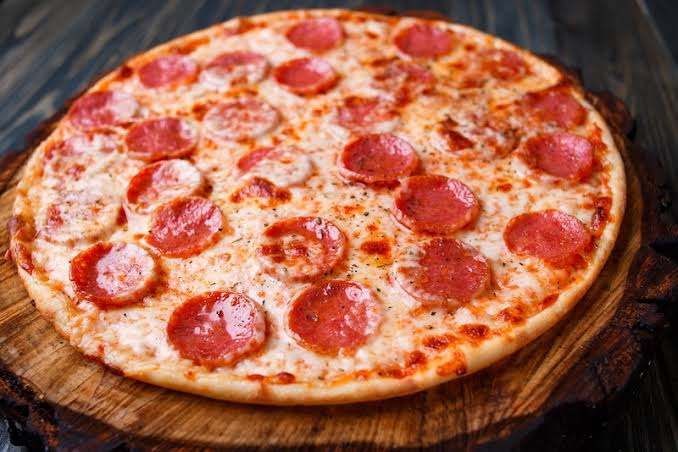

El equilibrio perfecto de la cocina mediterránea: una masa artesanal crujiente por fuera y esponjosa por dentro, cubierta con una base de salsa de tomate natural aromatizada con orégano, hilos de queso mozzarella fundido y tus ingredientes favoritos horneados a la perfección.
| Categoría | Ingrediente | Cantidad |
|---|---|---|
| Masa de Pizza | Harina de trigo (fuerza o común) | 500 g |
| Agua tibia | 300 ml | |
| Levadura seca de panadería (o 15g fresca) | 5 g | |
| Aceite de oliva | 2 cucharadas | |
| Sal | 1 cucharadita | |
| Salsa de Tomate | Tomate triturado o passata | 200 g |
| Ajo picado | 1 diente | |
| Aceite de oliva, sal y pimienta | Al gusto | |
| Orégano seco | 1 cucharadita | |
| Cubierta (Toppings) | Queso mozzarella rallado o en láminas | 250 g |
| Jamón cocido, pepperoni o vegetales | A elección | |
| Aceitunas negras o verdes | Al gusto |